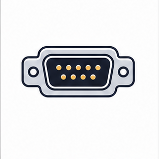

Keys: Left/Right or PageUp/PageDown to move, Home/End to jump, S to toggle slideshow, F for fullscreen, Z for fit/fill, Esc to exit.
Stream Buffers and Message Buffers
Stream buffers move bytes without message boundaries. Message buffers move variable-length messages while preserving boundaries. The right choice depends on payload shape.
Course: FreeRTOS Lecture
Embedded Systems Laboratory, Pusan National University
Instructor: Prof. Yunju Baek
Learning path
- Byte stream versus message boundary
- Trigger level and wake-up behavior
- Single writer and single reader assumptions
- ISR-to-parser and task-to-task payload paths
- Object-choice review against queues and notifications
First target: choose the buffer from the shape of the data, not the convenience of the API name.
01
Course Position
Module 13 used a task notification for a small direct event or value. Module 14 puts payload back at the center.

Stream bufferA continuous byte stream without preserved message boundaries.

Message bufferA variable-length message path that preserves message boundaries.

Peripheral bytesUART-like input makes byte-stream behavior practical.
The module is about data shape and wake-up policy.
02
Problem Frame
Continuous bytesUART or socket-like input arrives as an ordered byte stream and parser logic finds frames.
Message boundariesCommand packets should be received as complete variable-length messages.
Wake-up thresholdTrigger level changes when a blocked receiver wakes and how much latency is introduced.
Endpoint assumptionFreeRTOS stream and message buffers are designed for one writer and one reader unless external protection is added.
Payload shape decides the object.
03
Terminology Before APIs
| Term | Meaning in this module |
|---|
| Stream buffer | A FreeRTOS object for byte-stream communication without message boundaries. |
| Message buffer | A FreeRTOS object for variable-length messages that preserve boundaries. |
| Trigger level | Number of bytes that should be present before a blocked receiver is woken. |
| Single writer | The intended design assumption that one task or ISR writes to the buffer. |
| Single reader | The intended design assumption that one task reads from the buffer. |
| Message boundary | The separation between complete messages or packets. |
| Partial read | A stream-buffer receive can return fewer bytes than the sender originally wrote. |
| Payload ownership | The rule that says who owns data before send, while buffered, and after receive. |
The boundary question separates stream and message buffer design.
04
Primary Visual Anchor
Reading Order
- Stream buffer preserves byte order but not packet boundaries.
- Message buffer preserves one message at a time.
- Trigger level changes wake-up behavior.
- Single writer and single reader assumptions must be reviewed.
Shared generated infographic asset.
The comparison visual should be the module's anchor.
05
Byte Stream Mental Model
A stream buffer is a byte conveyor. The receiver may receive chunks that do not match application frame boundaries.
Preserved
- Byte order.
- Stored bytes until read.
- Wake-up when trigger or timeout allows.
Not preserved
- Application packet boundaries.
- Original send call grouping.
- Multiple-reader routing.
Parser job
- Find delimiters.
- Assemble frames.
- Handle partial data and overflow.
A stream receiver is usually a parser.
06
Message Boundary Mental Model
A message buffer stores each variable-length message with length metadata so the receiver gets one complete message.
Preserved
- Message boundary.
- Variable-length payload as one unit.
- Receive operation returns one message.
Cost
- Length metadata consumes space.
- Max message size must fit buffer.
- No general multi-consumer routing.
Good fit
- Commands.
- Packets.
- Records where boundaries matter.
A message buffer receiver should not have to rediscover packet boundaries.
07
API Surface Map
Stream buffer
xStreamBufferCreate()xStreamBufferSend()xStreamBufferReceive()xStreamBufferSendFromISR()xStreamBufferReceiveFromISR()
Message buffer
xMessageBufferCreate()xMessageBufferSend()xMessageBufferReceive()xMessageBufferSendFromISR()xMessageBufferReceiveFromISR()
Inspect/reset
xStreamBufferBytesAvailable()xStreamBufferSpacesAvailable()xStreamBufferSetTriggerLevel()xStreamBufferReset()
The API families look parallel, but receiver contracts differ.
08
Configuration and Allocation
Build and allocation choices
configSUPPORT_STATIC_ALLOCATIONconfigSUPPORT_DYNAMIC_ALLOCATIONxStreamBufferCreateStatic()xMessageBufferCreateStatic()configUSE_TRACE_FACILITY
Review questions
- How much buffer storage is required for bursts?
- Does static allocation improve predictability?
- Is the trigger level documented?
- Is trace enabled for pressure diagnosis?
Buffers are memory objects first and communication objects second.
09
Trigger Level and Wake-Up Behavior
Low
Receiver wakes quickly and latency stays low.
More wake-ups and smaller reads.
High
Receiver wakes less often and may process larger chunks.
Latency rises and timeout behavior matters more.
Too high
May reduce CPU overhead in a narrow case.
Receiver can sleep while useful data is already present.
Trigger level is a latency-throughput design choice.
10
Single Writer and Single Reader Assumption
Default assumption
- One writer endpoint.
- One reader endpoint.
- No built-in multi-producer routing policy.
If violated
- External mutual exclusion may be required.
- Message ownership becomes harder.
- Queue or gatekeeper may be clearer.
Review evidence
- List every writer.
- List every reader.
- Document ISR versus task endpoint.
Endpoint count is part of object selection.
11
Stream Buffer Send and Receive Path
WriterTask or ISR writes bytes into the stream buffer.
→
BufferStores ordered bytes until receiver consumes them.
→
Trigger/timeoutReceiver wakes based on bytes available or wait timeout.
→
ParserApplication code creates message boundaries from the byte stream.
Stream buffer logic ends before protocol parsing begins.
12
Message Buffer Send and Receive Path
WriterBuilds a complete variable-length message.
→
BufferStores message length and payload together.
→
ReceiverReceives one complete message if destination storage is large enough.
→
HandlerProcesses one command, record, or packet at a time.
Message buffer design protects packet boundaries.
13
Stream or Message Decision Table
| Payload shape | Better fit | Reason |
|---|
| UART line input | Stream buffer | Bytes arrive continuously; parser finds delimiters. |
| Binary command packet | Message buffer | Receiver should process complete packets only. |
| Fixed-size control struct | Queue | Fixed item size and multiple pending items are natural. |
| Wake one parser task | Task notification plus separate buffer | Notification wakes; buffer carries data. |
The payload shape table should be completed before writing code.
14
Queue Comparison
Comparison Focus
- Queue items have fixed size.
- Queue preserves item boundaries by design.
- Stream buffer is byte oriented.
- Message buffer preserves variable-length message boundaries.
Source: FreeRTOS Kernel Book, Figure 5.1, used for object comparison.
Queues are still the right answer for many fixed-record designs.
15
Variable Payload Context
Comparison Focus
- Structured queue messages fit fixed-size records.
- Pointers can avoid large copies but add ownership rules.
- Message buffers avoid fixed item size when payload length varies.
- Stream buffers avoid message framing when data is continuous.
Source: FreeRTOS Kernel Book, Figure 5.4, used for object comparison.
Variable payload design is about copy cost, boundaries, and ownership.
16
Communication Path Context
Reading Focus
- Separate wake-up signal from payload path.
- Network or cloud paths often contain multiple object types.
- A stream may carry bytes while a notification wakes a task.
- Architecture should name each payload boundary.
Source: FreeRTOS Kernel Book, Figure 10.6.
Real systems combine signaling and payload objects.
17
ISR Byte Feed Pattern
UART RX ISRReads byte or DMA chunk and clears interrupt flag.
→
Stream sendxStreamBufferSendFromISR stores bytes and reports wake condition.
→
Yield decisionxHigherPriorityTaskWoken drives portYIELD_FROM_ISR when needed.
→
Parser taskReceives chunks and reconstructs frames.
ISR byte feed still follows Module 08 interrupt handoff rules.
18
Command Packet Pattern
ProducerBuilds one complete command or response packet.
→
Message sendxMessageBufferSend stores one message boundary.
→
ConsumerxMessageBufferReceive returns one complete message.
→
HandlerProcesses command without scanning for boundaries.
Message buffers remove boundary reconstruction from the receiver.
19
Message Buffer Size and Failure
Size facts
- Message buffer stores payload plus length metadata.
- One message must fit in the buffer.
- Receive storage must fit the incoming message.
Failure pressure
- Send fails or blocks when space is insufficient.
- Receive can fail if destination buffer is too small.
- Large worst-case messages can starve smaller messages.
Evidence
- Spaces available.
- Failed send count.
- Maximum observed message size.
- Receive buffer size audit.
A message buffer is only as good as its size policy.
20
Backpressure and Overflow
Producer faster
- Buffer fills.
- Send blocks or fails.
- ISR path may drop bytes or messages.
Consumer slower
- Parser backlog grows.
- Latency increases.
- Trigger level alone cannot fix undercapacity.
Design response
- Increase buffer only after measuring.
- Raise consumer priority if justified.
- Apply flow control or drop policy.
Backpressure is a design signal, not just a buffer-size complaint.
21
Stream Buffer Versus Message Buffer
Aspect
Stream buffer
Message buffer
Data unit
Bytes.
Variable-length messages.
Boundary
Application parser creates boundaries.
Buffer preserves boundaries.
Receive
Can return partial byte chunks.
Returns one complete message.
Good fit
UART RX, byte protocols, continuous streams.
Commands, packets, variable-length records.
The difference is not performance first; it is boundary semantics first.
22
Object Selection Revisited
Decision Filter
- Queue for fixed-size records or pointer items.
- Stream buffer for continuous bytes.
- Message buffer for variable-length message boundaries.
- Notification for wake-up without payload.
- Event group for condition bits without payload.
Shared generated infographic asset.
Object choice should preserve exactly the information the receiver needs.
23
Mini Case: UART Line Parser
Producer
- UART ISR or DMA completion provides bytes.
- Stream buffer stores ordered bytes.
- ISR stays short.
Parser
- Task reads chunks.
- Searches for newline or frame delimiter.
- Handles partial frame across receives.
Diagnostics
- Bytes dropped.
- Maximum fill level.
- Parser wake latency.
- Frame error count.
A UART line parser is a stream-buffer lesson.
24
Mini Case: Command Dispatcher
Producer
- Command builder creates complete packet.
- Message buffer send preserves one command.
- Send failure indicates buffer pressure.
Consumer
- Dispatcher receives exactly one command.
- No delimiter scan needed.
- Handler validates command length and type.
Review
- Maximum command length.
- Buffer capacity.
- Drop or block policy.
- Single reader assumption.
A command dispatcher is a message-buffer lesson.
25
Mini Case: DMA Chunk Receiver
Chunk source
- DMA half/full complete event.
- ISR provides buffer span or bytes.
- Cache and ownership may matter on some MCUs.
Buffer choice
- Stream buffer for continuous bytes.
- Queue descriptor for external buffers.
- Message buffer for complete variable packets.
Risk
- Copy cost.
- Buffer overflow.
- Lost chunk under burst.
- Unclear ownership of DMA memory.
DMA designs may need a descriptor queue instead of copying bytes.
26
Failure Modes Worth Naming Early
Boundary loss
- Stream buffer used for packets without parser discipline.
- Receiver assumes one receive equals one message.
- Fix with message buffer or explicit frame parser.
Wrong endpoint count
- Multiple writers or readers use the buffer without protection.
- Interleaving or ownership confusion appears.
- Fix with external lock, queue, or gatekeeper.
Trigger surprise
- Trigger level delays receiver more than expected.
- Low trigger causes excessive wakeups.
- Fix by measuring latency and fill level.
Most buffer bugs are payload-shape bugs.
27
Diagnostic Evidence
Bytes available
Message size

Wake latency

Trace
Capacity
- Bytes available.
- Spaces available.
- Failed send count.
Payload
- Max message size.
- Frame error count.
- Partial receive count.
Timing
- ISR send timestamp.
- Receiver wake timestamp.
- Parser backlog duration.
Measure capacity, payload shape, and timing together.
28
Trace View for Buffer Pressure
Reading Focus
- Trace send and receive events.
- Match buffer pressure with task scheduling.
- Look for receive delays after trigger condition.
- Use evidence before changing buffer size or priority.
Source: FreeRTOS Kernel Book, Chapter 12 trace figure.
Buffer tuning should be evidence-driven.
29
Tutorial 19 Reading Path
CreateFind stream buffer size and trigger level.
→
SendFind writer context and send block time.
→
ReceiveFind receiver chunk size and timeout.
→
ExplainMap output to bytes available and parser behavior.
Tutorial 19 should be read as stream pressure and trigger behavior.
30
Tutorial 20 Reading Path
Create
- Find message buffer size.
- Find maximum expected message size.
- Check static or dynamic allocation.
Send and receive
- Find complete message construction.
- Find receive buffer size.
- Check return values.
Variation
- Send message too large.
- Reduce receive buffer.
- Compare with queue of fixed-size structs.
Tutorial 20 should prove that boundaries are preserved.
31
Source Reading: stream_buffer.c
Ring storageRead how bytes are copied into and out of buffer storage.
Trigger levelFind how trigger level interacts with blocked receiver wake-up.
FromISR pathsTrace send and receive variants used at interrupt boundaries.
Source reading should connect buffer state with task wake-up behavior.
stream_buffer.c is the shared implementation foundation.
32
Source Reading: message_buffer.h
Wrapper layer
- Message buffer APIs wrap stream buffer mechanisms.
- Length metadata creates message boundaries.
- Receive semantics differ from raw stream reads.
Review focus
- Maximum message size.
- Destination buffer size.
- Return value when send or receive cannot complete.
- Single writer and reader assumption.
Implementation reuse does not remove receiver-contract differences.
33
Design Decision Table
| Decision | Question | Evidence |
|---|
| Payload shape | Continuous bytes or complete messages? | Parser requirement or boundary requirement |
| Endpoint count | Exactly one writer and one reader? | Endpoint list and protection policy |
| Wake policy | What trigger level and timeout make sense? | Latency and wake frequency measurement |
| Capacity | How much burst can be absorbed? | Spaces available, failed send count, max fill level |
| Alternative | Would queue, notification, or event group be clearer? | Payload, order, boundary, and receiver model |
Buffer selection should be a payload-shape decision table.
34
Testing Checklist
Nominal path
- Stream bytes received in order.
- Message boundary preserved.
- Trigger level behavior observed.
Pressure path
- Producer faster than consumer.
- Large message near buffer limit.
- ISR burst into stream buffer.
Failure path
- Send failure handled.
- Receive buffer too small handled.
- Parser detects malformed stream.
A buffer lab should include overflow and boundary tests.
35
Code Review Checklist
Mechanism review
- Are return values checked?
- Are block times explicit?
- Is FromISR path correct?
- Is static or dynamic allocation intentional?
Design review
- Does object match payload shape?
- Are endpoints single writer and reader?
- Is trigger level justified?
- Is overflow policy visible?
Review payload shape before tuning buffer size.
36
Project Boundary Check
Build
- Create stream buffer for UART-like bytes.
- Create message buffer for variable command packets.
- Log bytes available and failed sends.
Modify
- Change trigger level.
- Send packet larger than expected.
- Introduce producer burst.
Explain
- Draw payload boundary.
- Explain wake-up timing.
- Choose queue or notification when buffer is wrong.
The lab output should include payload-shape evidence.
37
Review Questions
Question 1
Why can a stream buffer receiver get partial data that does not match a protocol frame?
Question 2
What extra information does a message buffer preserve compared with a stream buffer?
Question 3
When should a queue or notification be used instead of a stream or message buffer?
A strong answer names payload shape, boundaries, endpoints, and pressure evidence.
38
One-Slide Summary
Stream buffer
- Ordered bytes.
- No message boundary.
- Parser task owns framing.
Message buffer
- Variable-length messages.
- Boundary preserved.
- Receiver gets one complete message.
Evidence
- Trigger level.
- Buffer pressure.
- Endpoint count.
- Payload-size limits.
The buffer must preserve the information the receiver needs.
39
Bridge to Module 15
Module 15 closes the course by turning the same evidence habits into diagnostics, troubleshooting, integration, and design review.
Payload pressureBuffers create measurable capacity and latency evidence.
TraceDiagnostics reveal object history and task timing.

IntegrationFinal systems require boundary checks across modules.
The final module turns object-specific checks into system-level debugging.
40
References and Further Reading
References used in this module are separated from optional deeper reading.
References Used
- FreeRTOS API reference: stream buffer and message buffer APIs.
- FreeRTOS Kernel source: stream_buffer.c and message_buffer.h.
- FreeRTOS Kernel Book, Chapter 5 queue figures for fixed-record comparison.
- FreeRTOS Kernel Book, Chapter 10 communication-path figure 10.6.
- FreeRTOS Kernel Book, Chapter 12 trace figure for kernel object history.
- Lab Project FreeRTOS Tutorials, Tutorial 19 and Tutorial 20.
Further Reading
- FreeRTOS API reference: stream buffer trigger levels, static creation, and FromISR variants.
- FreeRTOS API reference: message buffer send and receive failure behavior.
- MCU UART and DMA documentation for interrupt or DMA-driven byte ingestion.
- Tracealyzer or FreeRTOS trace documentation for buffer pressure and task wake-up analysis.
References should support traceability and direct further study.
41